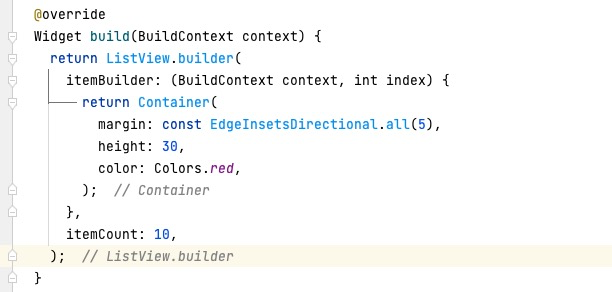
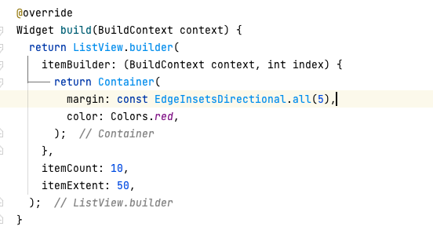

第2节：布局优化
尽量减少由内部操作引起的布局传递
如果你经常使用 Flutter 编程，你可能已经熟悉了在创建 UI 时 布局和约束是如何工作的。你甚至可能已经记住了 Flutter 的基本布局规则： 首先，上层 widget 向下层 widget 传递约束条件； 然后，下层 widget 向上层 widget 传递大小信息； 最后，上层 widget 决定下层 widget 的位置。
对于一些 widget，特别是网格列表和列表，布局过程中性能代价很大。 Flutter 尽可能在 widget 上只执行一次布局传递，但有时需要再次传递（称为 内部传递,或向上传递），这可能会降低性能。
什么是内部传递？
例如，你想要所有单元格都具有或大或小的效果（或类似需要轮询所有单元格的计算）时，就会发生内部传递。
例如，考虑一个大型的 卡片 网格列表时。一个网格列表应该有统一大小的单元格，所以布局代码执行了一次传递，从网格列表的根部开始（在 widget 树中），要求网格列表中的 每个 卡片（不仅仅是可见的卡片）来返回 内部 尺寸—假设没有任何限制，widget 更喜欢这样的尺寸。有了这些信息，底层框架就确定了一个统一的单元格尺寸，并再次重新访问所有的网格单元，告诉每个卡片应该使用什么尺寸。
调试内部传递
要确认你是否有过多的内部传递，请在 DevTools 中启用 布局跟踪 (Track layouts option) （默认情况下是禁用的），并查看应用程序的 堆栈跟踪 (stack trace) 以了解执行了多少次布局传递。一旦你启用跟踪，内部的时间线事件将被标记为 “$runtimeType intrinsics”。
避免内部传递
你有几个选择来避免内部传递：
- 将单元格设置为固定大小。
- 选择一个特定的单元格作为 “锚” —所有单元格的尺寸都将相对于这个单元格。编写一个自定义渲染对象，首先定位子锚点，然后在其周围布置其他子单元。
小测验
对于以下两段列表布局代码，哪一段发生了内部传递?

